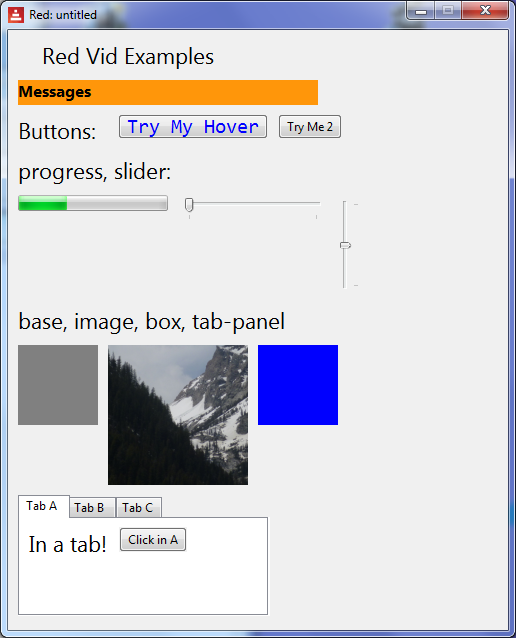

Red by Example - an accessible reference by example
index parse vid series help about links contact
Red VID Example - Miscellaneous Faces
Red [
needs 'view
file: %misc-faces.red
Author: "Mike Parr"
]
button1-down: function [] [
mytext/text: "You clicked 1!"
print "button1 clicked"
progress1/data: 44%
]
button1-over: function [] [
mytext/text: "You hovered 1!"
]
button2-down: function [] [
mytext/text: "You clicked 2!" print "hello"
]
button2-over: function [] [
mytext/text: "You hovered 2!"
button2/text: "Changed"
]
view [
size 500x600 ;-- window
h4 " Red Vid Examples "
return
mytext: text 300x25 bold orange font-size 12 "Messages" ;for output
return
h4 "Buttons: "
button1: button "Try My Hover" font [name: "Consolas" size: 15 color: blue]
on-down [button1-down]
on-over [button1-over]
button2: button "Try Me 2"
on-down [button2-down]
on-over [button2-over]
return
h4 "progress, slider:"
return
progress1: progress 33% [] ;-- initially 33%
slider2: slider [mytext/text: face/data]
slider1: slider 20x100 50% [ ;-- vertical, initially at middle
mytext/text: mold face/data
progress1/data: face/data ;-- set progress to slider
]
return
h4 "base, image, box, tab-panel"
return
base ;--defaults only
hills-image: image 140x140 %country.png ;-- supply a file name
box blue
return
tab-panel 250x120 [
"Tab A" [h4 "In a tab!" button "Click in A" [print "A"] ]
"Tab B" [button "Click in B" [print "B"] ]
"Tab C" [button "Click in C" [print "C"] ]
]
]

|